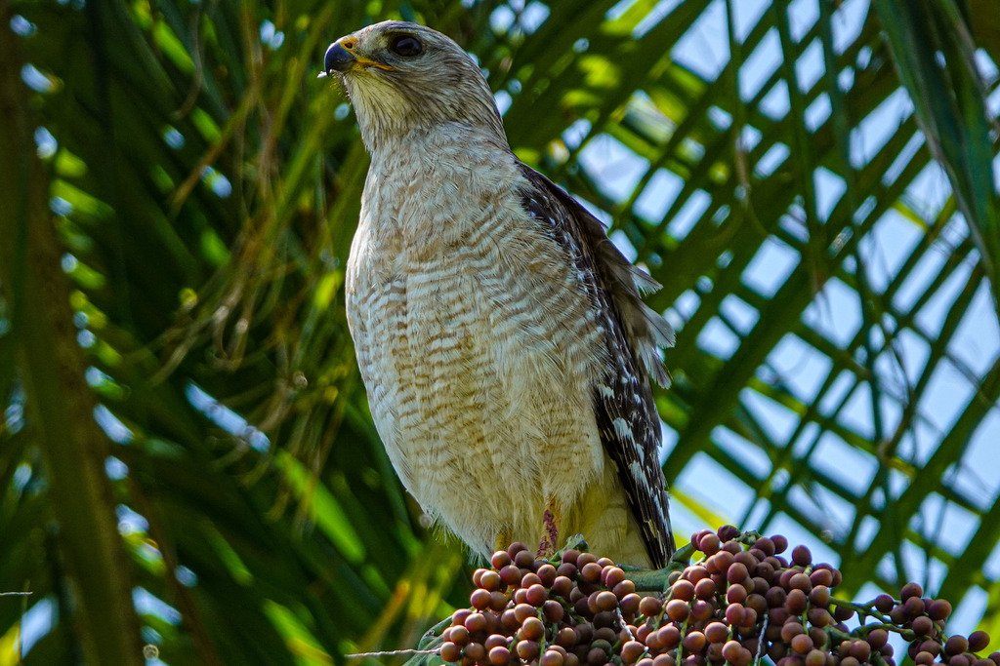

📷 Photo by Rob Carr · CC-BY-NC · via iNaturalist · 📅 May 28, 2023
Quick Hits
- A loud, repeated 'kee-ahh' ringing through the trees is the signature call of the red-shouldered hawk — Florida's most vocal and commonly seen hawk.
- It is a woodland hawk, preferring to hunt from a perch under the canopy rather than soaring over open fields.
- The reddish-orange bars across the chest and the translucent crescent near the wingtips in flight are the key field marks.
- Blue jays imitate its call convincingly — so well that even experienced birders do a double-take.
How to Spot It
Chest
Reddish-orange barring across the breast.
Flight
Translucent crescent-shaped panel near the wingtips; banded tail.
Sound
Loud, repeated 'kee-ahh' — carrying and distinctive.
Habitat
Perches in wooded areas near water, not typically soaring high over open fields.
Voice
A loud, descending 'kee-ahh, kee-ahh' — one of the most recognizable hawk calls in the eastern U.S.
What to Look For
A medium hawk perched in a tree near water, with a barred reddish chest. The loud 'kee-ahh' call is often the first clue.
What It Eats
Lizards, frogs, snakes, crayfish, small mammals, and insects — hunted from a perch.
Where & When
Where in the park
Listen for the 'kee-ahh' call in the canopy near the ponds.
When to see it
Year-round resident, vocal and visible in every season.
Watching It Respectfully
Observe and enjoy.
Photo Gallery
Photos contributed by park visitors and volunteers via iNaturalist

📷 Rob Carr
📅 May 28, 2023

📷 Rob Carr
📅 May 17, 2025
Photo Credits
- © Rob Carr (CC-BY-NC), via iNaturalist